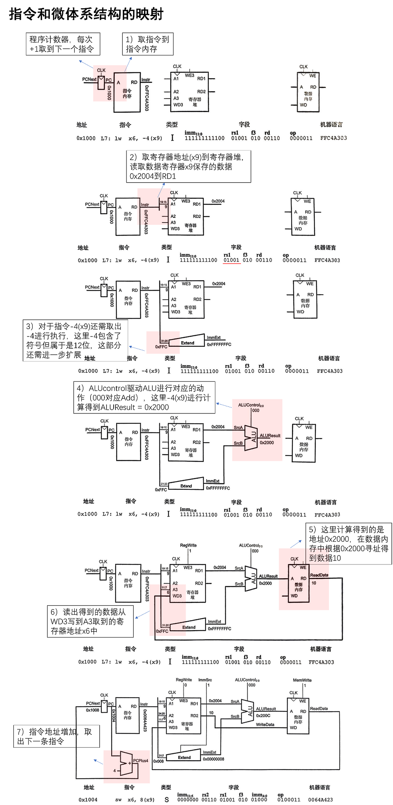
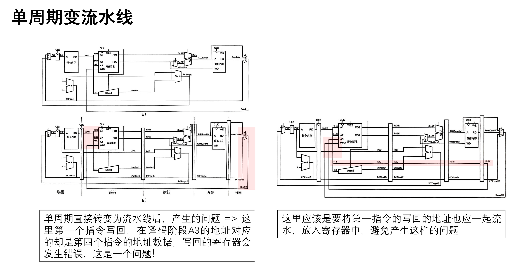
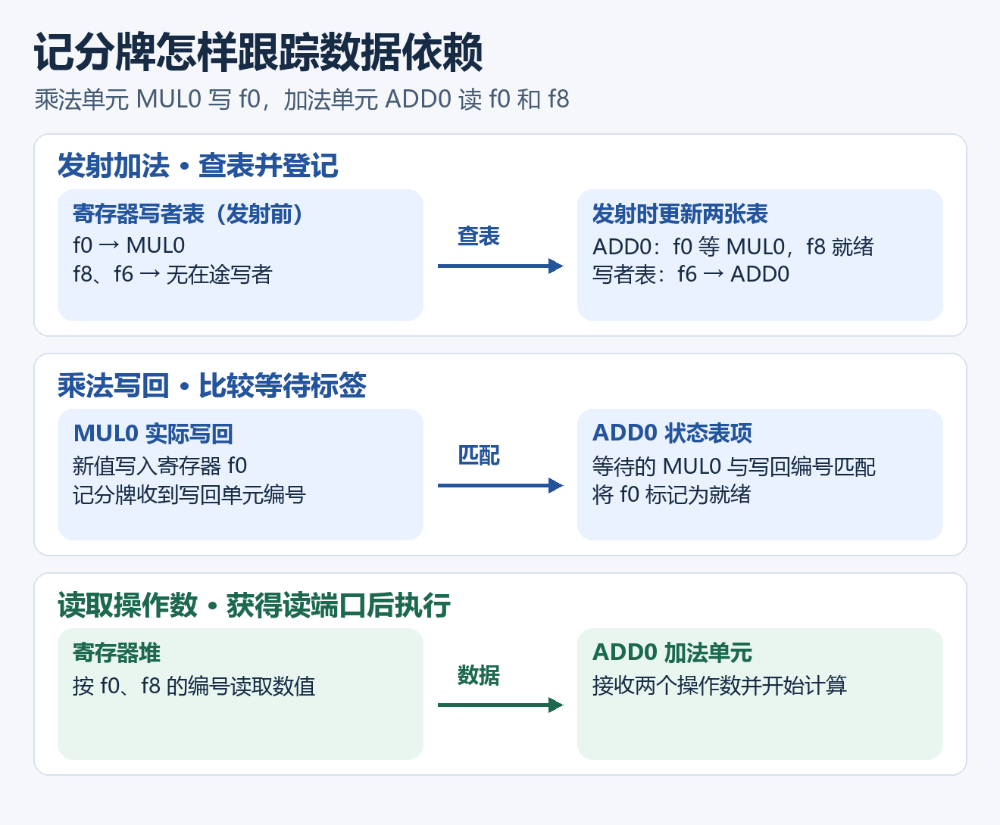

#单周期微体系结构
以 lw x6, -4(x9) 为例，梳理取指、寄存器读取、立即数扩展、地址计算、访存和写回。具体分析见图中标注。


补充说明：
- 本例为32位指令，顺序执行时PC加4；图中“每次+1”应改为“每次+4”。
- 图中编号是分析步骤，不代表时钟周期数。
- 最后一幅是下一条
sw x6, 8(x9)指令，展示的是写内存路径。
#从单周期到流水线
记录无停顿的五级流水线中，写回数据与目标寄存器编号必须保持对应的问题。具体分析见图中标注。


注：图中的“写回地址”指目标寄存器编号 rd，不是数据内存地址；它需要随指令经过各级流水线寄存器。
#旁路的边界：load-use hazard
学习旁路时留下一个问题：前一条 lw 已经进入 MEM，为什么不能直接把结果交给正在 EX 的下一条指令？
这里采用教材中的五级流水线：IF → ID → EX → MEM → WB，访存在 MEM 阶段用一个周期完成，并支持从 MEM/WB 向 EX 旁路。
#EX/MEM 中保存的是地址
lw x5, 0(x1)
add x6, x5, x3
假设 x1 = 0x1000、x3 = 4，从内存地址 0x1000 读出的32位数据为 10（十进制）。正确执行后应有 x5 = 10、x6 = 14。
lw 在 EX 阶段算出的是有效地址 0x1000，到 MEM 阶段才读取该地址中的数据。因此，当 lw 在 MEM、后一条 add 试图进入 EX 时：
| 检查项 | 当前内容 |
|---|---|
| EX/MEM 中的目标寄存器编号 | rd = 5，与 add.rs1 匹配 |
| EX/MEM 中的 ALU 结果 | 地址 0x1000 |
add 真正需要的操作数 |
内存中读出的数据 10 |
如果只因寄存器编号匹配，就把 EX/MEM 中的 ALU 结果旁路给 add，实际计算会变成：
错误旁路：x6 = 0x1000 + 4 = 0x1004
正确结果：x6 = 10 + 4 = 14
寄存器编号匹配只能说明存在依赖，还要确认旁路来源中保存的是这条指令需要的值。
#为什么不能直接使用本周期 MEM 读出的数据
对 add、sub 这类算术指令，EX 结束时已经得到待写回的运算结果；对 lw，还要继续经过 MEM 才能取得待写回的数据。
当前五级设计没有把“本周期读取内存，再用读出值完成本周期 ALU 运算”串成一条执行路径。若专门增加这种路径，就要重新评估内存读取与 ALU 运算串联后的时序，不能沿用当前设计的时钟周期假设。
所以，在这里，旁路本身不能消除紧邻的 load-use 依赖，需要先停顿一个周期。
#停顿一个周期，再旁路
让 add 留在 ID，并向 EX 插入一个气泡；lw 继续向后执行。处理后的关键周期如下：
| 指令 | 第3周期 | 第4周期 | 第5周期 |
|---|---|---|---|
lw x5, 0(x1) |
EX：计算地址 | MEM：读取数据 10 |
WB |
add x6, x5, x3 |
ID | ID：保持，尚未进入 EX | EX：计算 10 + 4 |
第4周期的 EX 阶段是气泡。到第5周期，加载结果 10 已保存在 MEM/WB 中，可以旁路到 add 的 ALU 输入 A，正确算出 14。停顿时前面的取指也需要保持，让等待中的指令不被覆盖。
本例的处理是“停顿一个周期，再旁路”。 如果两条指令之间原本就有一条无关指令，使 add 到第5周期才进入 EX，则在相同假设下无需额外停顿，仍可从 MEM/WB 取得加载结果。
本节数值与指令来自学习讨论；五级流水线的加载依赖及停顿机制参见Harris 第7章配套讲义，第118–120页。
图源：Harris《Digital Design and Computer Architecture: RISC-V Edition》相关教学数据通路，个人整理与批注。
#记分牌的硬件实现
经典记分牌用寄存器写者表记录每个寄存器的在途写者，用功能单元状态表记录指令的源和目的寄存器，以及各源操作数在等哪个单元写回。Hennessy 与 Patterson，第 6 版附录 C §C.7
- 发射。 功能单元空闲且目的寄存器没有在途写者时，用源寄存器编号查写者表，锁存依赖，并登记目的寄存器的新写者。
- 写回。 生产者实际写回后，记分牌用它的功能单元编号匹配等待项，将匹配的操作数标为就绪。
- 读取。 两个源操作数均就绪且获得读端口后，寄存器堆把数值送到功能单元，指令开始执行。
